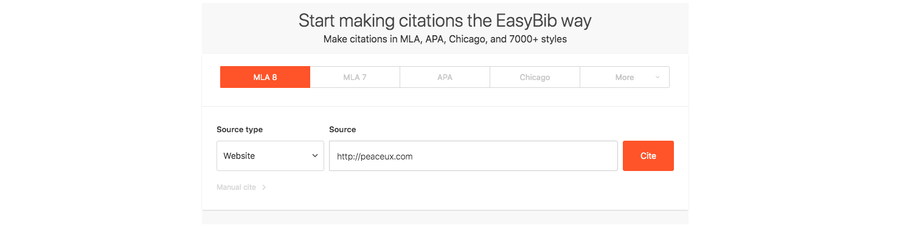

EasyBib - Search Page Optimization
Search Page Usability
Project Overview
My Role: ResearcherMethods: Observation, Interviewing, Polling
Tools: Hotjar, Webex
Platform: Desktop
Team Members: Melissa Rubes
Project Duration: June 2018 - August 2018
Problem
The Search results page across all of Chegg's citation sites had one of the highest drop-off rates. The drop-off rate is comprised of users who “go back” to a previous page in the workflow and users who “exit” (leave the site completely). On EasyBib redesign, there was a 12.3% drop-off rate on the search results page. This drop-off rate contributes to a poor user experience on our site and decreases business revenue.
Task
The goal was to uncover the reasons students were not satisfied with the search results page, and why they were dropping off from the search results page. Additionally, we wanted to gather feedback on users' search behaviors, expectations, and usability issues that prevent students from finding and selecting a source or continuing in the citation workflow.
Solution
Based on quantitative and qualitative data, we uncovered [ways] to reduce drop-off by improving certain areas of the citation workflow on EasyBib, such as:
- Provide messaging to encourage students to search by URL, ISBN or DOI, when possible
- Meet student’s expectations when searching by URL, ISBN, DOI and limit the number of results shown
- Provide a CTA for explanations and examples of each source type to users who are confused or unsure of their search query.
- Improve the overall scanability of each search result
- Include a search widget on the search results page so students can quickly edit their query and re-search.
Process
A mixed-method approach was used to fully explore and evaluate the problem space. Prior to conducting any research, we explored existing data provided by Google Analytics to better understand user search behavior, and hypothesize drop-off causes. From this, we observed higher drop-off rates from users who entered "unusual" queries, such as pdf links, generic URLs (cnn.com), and keywords.
With this information, we were able to research was split into three phases: observational, Hotjar, and Interviews.
Observation
Through Hotjar, an all-in-one tool for [getting] user feedback, we had the ability to capture a user's behavior after landing on a specific page. Hotjar began recording once users landed on the search results page, and concluded once the user completed a citation or exited the website. Hotjar provided qualitative context to insights gathered from Google Analytics. Specifically, observational data showed:
- Users wait on the no results found page for an extended period of time
- Users submit the same search results multiple times
- Users re-search multiple times, instead of citing manually when they can’t find a source
- Users don’t always select the first source when multiple results are shown
- Users create citations very quickly, and typically select "autocite" when they get only one result
- Users will select a result, view the eval page, then go back to the results page or re-search
Hotjar
In addition to capturing video of user behavior, Hotjar can poll users who land on a specified page. We intercepted users who landed on the search results page, and polled their search result satisfaction (5-pt likert scale) and suggestions for improvements (text). Hotjar allowed us to intercept users in the context of interest, and add quantitative numbers to describe the problem space. From the 637 Hotjar polls, we found:
- Search functionality is satisfactory at best (57% rated above neutral)
- PDF searches often lead to unsatisfactory results, unless the search engine detects key words
- Users who searched pseudo-urls (cnn.com, usa.gov) reported high satisfaction, suggesting users do so intentionally
- Users who searched for websites-citations using word searches reported higher search satisfaction, compared to users who searched for books-citations using words searches
- Load times and unpredictable screen movement negatively impacted search satisfaction
Interviews
Lastly, remote one-on-one interviews were conducted to explore in-depth users' behavior as they move through the citation flow. 8 students were recruited through Chegg's participant pool. Participants were a mix of varying ages, grades, disciplines, and schools. Based on the protocol, the allotted interview time was split into two portions: a task-based section, and a scenario-based section. For the task section, students were asked to send a bibliography from a recent paper to review in the interviews. During the first section, students were asked to walkthrough their process of creating a couple of citations. In the next section, students were asked to walkthrough a few unusual scenarios observed in the previous research phases. From the 8 interviews, we saw:
- Students are sometimes unsure which source type to select when creating a citation
- Students will add additional information to the query if the initial search yielded irrelevant results (ie. "Twilight" vs "Twilight Meyers")
- Selecting a source type was confusing for students when citing a journal article
- Students failed to notice all search results because of the ad placement on the website
- Students had trouble scanning the information on the search results page
- When the initial search yields insignificant results, students first instinst is usually to re-search